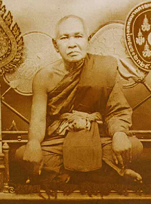

บุคคลสําคัญ

บุคคลสำคัญของจังหวัดกาญจนบุรีที่โดดเด่นที่สุดคือสมเด็จพระญาณสังวรสมเด็จพระสังฆราชสกลมหาสังฆปริณายก(เจริญ สุวฑฺฒโน)ซึ่งเป็นคนพื้นเพย่านปากแพรกนอกจากนี้ยังมีเจ้าเมืองในอดีต เช่น พระยาประสิทธิสงครามรามภักดีศรีวิเศษ
และนักปกครองยุคปัจจุบันอย่างนายอธิสรรค์ อินทร์ตรา (ผู้ว่าฯ กาญจนบุรีคนใหม่)